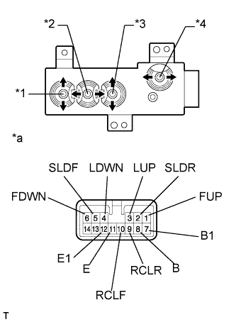
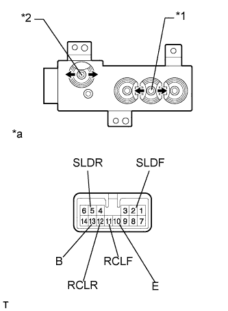
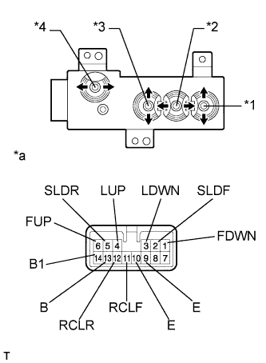
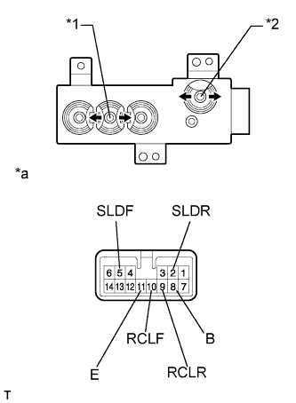

ПЕРЕКЛЮЧАТЕЛЬ ЭЛЕКТРОПРИВОДА СИДЕНЬЯ (без запоминающего устройства) > ПРОВЕРКА |
| 1. ПРОВЕРЬТЕ ПЕРЕКЛЮЧАТЕЛЬ ЭЛЕКТРОПРИВОДА ЛЕВОГО ПЕРЕДНЕГО СИДЕНЬЯ (для моделей с левосторонним рулевым управлением) |
|  |
Измерьте сопротивление в соответствии со значениями, приведенными в таблице ниже.
| Контакты для подключения диагностического прибора | Положение переключателя | Заданные условия |
| 5 (SLDF) - 8 (B) 5 (SLDF) - 7 (B1) | Front | Менее 1 Ом |
| 2 (SLDR) - 11 (E) 2 (SLDR) - 12 (E1) | ||
| 5 (SLDF) - 11 (E) 5 (SLDF) - 12 (E1) | Выкл | |
| 2 (SLDR) - 11 (E) 2 (SLDR) - 12 (E1) | ||
| 5 (SLDF) - 11 (E) 5 (SLDF) - 12 (E1) | Rear | |
| 2 (SLDR) - 8 (B) 2 (SLDR) - 7 (B1) |
| Контакты для подключения диагностического прибора | Положение переключателя | Заданные условия |
| 1 (FUP) - 8 (B) 1 (FUP) - 7 (B1) | Вверх | Менее 1 Ом |
| 6 (FDWN) - 11 (E) 6 (FDWN) - 12 (E1) | ||
| 1 (FUP) - 11 (E) 1 (FUP) - 12 (E1) | Выкл | |
| 6 (FDWN) - 11 (E) 6 (FDWN) - 12 (E1) | ||
| 1 (FUP) - 11 (E) 1 (FUP) - 12 (E1) | Вниз | |
| 6 (FDWN) - 8 (B) 6 (FDWN) - 7 (B1) |
| Контакты для подключения диагностического прибора | Положение переключателя | Заданные условия |
| 3 (LUP) - 8 (B) 3 (LUP) - 7 (B1) | Вверх | Менее 1 Ом |
| 4 (LDWN) - 11 (E) 4 (LDWN) - 12 (E1) | ||
| 3 (LUP) - 11 (E) 3 (LUP) - 12 (E1) | Выкл | |
| 4 (LDWN) - 11 (E) 4 (LDWN) - 12 (E1) | ||
| 3 (LUP) - 11 (E) 3 (LUP) - 12 (E1) | Вниз | |
| 4 (LDWN) - 8 (B) 4 (LDWN) - 7 (B1) |
| Контакты для подключения диагностического прибора | Положение переключателя | Заданные условия |
| 10 (RCLF) - 8 (B) 10 (RCLF) - 7 (B1) | Front | Менее 1 Ом |
| 9 (RCLR) - 11 (E) 9 (RCLR) - 12 (E1) | ||
| 10 (RCLF) - 11 (E) 10 (RCLF) - 12 (E1) | Выкл | |
| 9 (RCLR) - 11 (E) 9 (RCLR) - 12 (E1) | ||
| 10 (RCLF) - 11 (E) 10 (RCLF) - 12 (E1) | Rear | |
| 9 (RCLR) - 8 (B) 9 (RCFR) - 7 (B1) |
| *1 | Переключатель вертикального перемещения передней части |
| *2 | Переключатель продольного перемещения |
| *3 | Переключатель подъема |
| *4 | Переключатель наклона |
| *a | Устройство с отсоединенным жгутом проводов (переключатель электропривода переднего сиденья) |
| 2. ПРОВЕРЬТЕ ПЕРЕКЛЮЧАТЕЛЬ ЭЛЕКТРОПРИВОДА ПРАВОГО ПЕРЕДНЕГО СИДЕНЬЯ (для моделей с левосторонним рулевым управлением) |
|  |
Измерьте сопротивление в соответствии со значениями, приведенными в таблице ниже.
| Контакты для подключения диагностического прибора | Положение переключателя | Заданные условия |
| 2 (SLDF) - 13 (B) | Передняя сторона | Менее 1 Ом |
| 5 (SLDR) - 10 (E) | ||
| 2 (SLDF) - 10 (E) | Выкл | |
| 5 (SLDR) - 10 (E) | ||
| 2 (SLDF) - 10 (E) | Назад | |
| 5 (SLDR) - 13 (B) |
| Контакты для подключения диагностического прибора | Положение переключателя | Заданные условия |
| 11 (RCLF) - 13 (B) | Передняя сторона | Менее 1 Ом |
| 12 (RCLR) - 10 (E) | ||
| 11 (RCLF) - 10 (E) | Выкл | |
| 12 (RCLR) - 10 (E) | ||
| 11 (RCLF) - 10 (E) | Назад | |
| 12 (RCLR) - 13 (B) |
| *1 | Переключатель продольного перемещения |
| *2 | Переключатель наклона |
| *a | Устройство с неподсоединенным жгутом проводов (переключатель электропривода переднего сиденья) |
| 3. ПРОВЕРЬТЕ ПЕРЕКЛЮЧАТЕЛЬ ЭЛЕКТРОПРИВОДА ПРАВОГО ПЕРЕДНЕГО СИДЕНЬЯ (для моделей с правосторонним рулевым управлением) |
|  |
Измерьте сопротивление в соответствии со значениями, приведенными в таблице ниже.
| Контакты для подключения диагностического прибора | Положение переключателя | Заданные условия |
| 2 (SLDF) - 13 (B) 2 (SLDF) - 14 (B1) | Передняя сторона | Менее 1 Ом |
| 5 (SLDR) - 10 (E) 5 (SLDR) - 9 (E1) | ||
| 2 (SLDF) - 10 (E) 2 (SLDF) - 9 (E1) | Выкл | |
| 5 (SLDR) - 10 (E) 5 (SLDR) - 9 (E1) | ||
| 2 (SLDF) - 10 (E) 2 (SLDF) - 9 (E1) | Назад | |
| 5 (SLDR) - 13 (B) 5 (SLDR) - 14 (B1) |
| Контакты для подключения диагностического прибора | Положение переключателя | Заданные условия |
| 6 (FUP) - 13 (B) 6 (FUP) - 14 (B1) | Вверх | Менее 1 Ом |
| 1 (FDWN) - 10 (E) 1 (FDWN) - 9 (E1) | ||
| 6 (FUP) - 10 (E) 6 (FUP) - 9 (E1) | Выкл | |
| 1 (FDWN) - 10 (E) 1 (FDWN) - 9 (E1) | ||
| 6 (FUP) - 10 (E) 6 (FUP) - 9 (E1) | Вниз | |
| 1 (FDWN) - 13 (B) 1 (FDWN) - 14 (B1) |
| Контакты для подключения диагностического прибора | Положение переключателя | Заданные условия |
| 4 (LUP) - 13 (B) 4 (LUP) - 14 (B1) | Вверх | Менее 1 Ом |
| 3 (LDWN) - 10 (E) 3 (LDWN) - 9 (E1) | ||
| 4 (LUP) - 10 (E) 4 (LUP) - 9 (E1) | Выкл | |
| 3 (LDWN) - 10 (E) 3 (LDWN) - 9 (E1) | ||
| 4 (LUP) - 10 (E) 4 (LUP) - 9 (E1) | Вниз | |
| 3 (LDWN) - 13 (B) 3 (LDWN) - 14 (B1) |
| Контакты для подключения диагностического прибора | Положение переключателя | Заданные условия |
| 11 (RCLF) - 13 (B) 11 (RCLF) - 14 (B1) | Передняя сторона | Менее 1 Ом |
| 12 (RCLR) - 10 (E) 12 (RCLR) - 9 (E1) | ||
| 11 (RCLF) - 10 (E) 11 (RCLF) - 9 (E1) | Выкл | |
| 12 (RCLR) - 10 (E) 12 (RCLR) - 9 (E1) | ||
| 11 (RCLF) - 10 (E) 11 (RCLF) - 9 (E1) | Назад | |
| 12 (RCLR) - 13 (B) 12 (RCFR) - 14 (B1) |
| *1 | Переключатель вертикального перемещения передней части |
| *2 | Переключатель продольного перемещения |
| *3 | Переключатель подъема |
| *4 | Переключатель наклона |
| *a | Устройство с неподсоединенным жгутом проводов (переключатель электропривода переднего сиденья) |
| 4. ПРОВЕРЬТЕ ПЕРЕКЛЮЧАТЕЛЬ ЭЛЕКТРОПРИВОДА ЛЕВОГО ПЕРЕДНЕГО СИДЕНЬЯ (для моделей с правосторонним рулевым управлением) |
|  |
Измерьте сопротивление в соответствии со значениями, приведенными в таблице ниже.
| Контакты для подключения диагностического прибора | Положение выключателя | Заданные условия |
| 5 (SLDF) - 8 (B) | Вперед | Менее 1 Ом |
| 2 (SLDR) - 11 (E) | ||
| 5 (SLDF) - 11 (E) | Выкл | |
| 2 (SLDR) - 11 (E) | ||
| 5 (SLDF) - 11 (E) | Задняя сторона | |
| 2 (SLDR) - 8 (B) |
| Контакты для подключения диагностического прибора | Положение выключателя | Заданные условия |
| 10 (RCLF) - 8 (B) | Вперед | Менее 1 Ом |
| 9 (RCLR) - 11 (E) | ||
| 10 (RCLF) - 11 (E) | Выкл | |
| 9 (RCLR) - 11 (E) | ||
| 10 (RCLF) - 11 (E) | Задняя сторона | |
| 9 (RCLR) - 8 (B) |
| *1 | Переключатель продольного перемещения |
| *2 | Переключатель наклона |
| *a | Устройство с неподсоединенным жгутом проводов (переключатель электропривода переднего сиденья) |